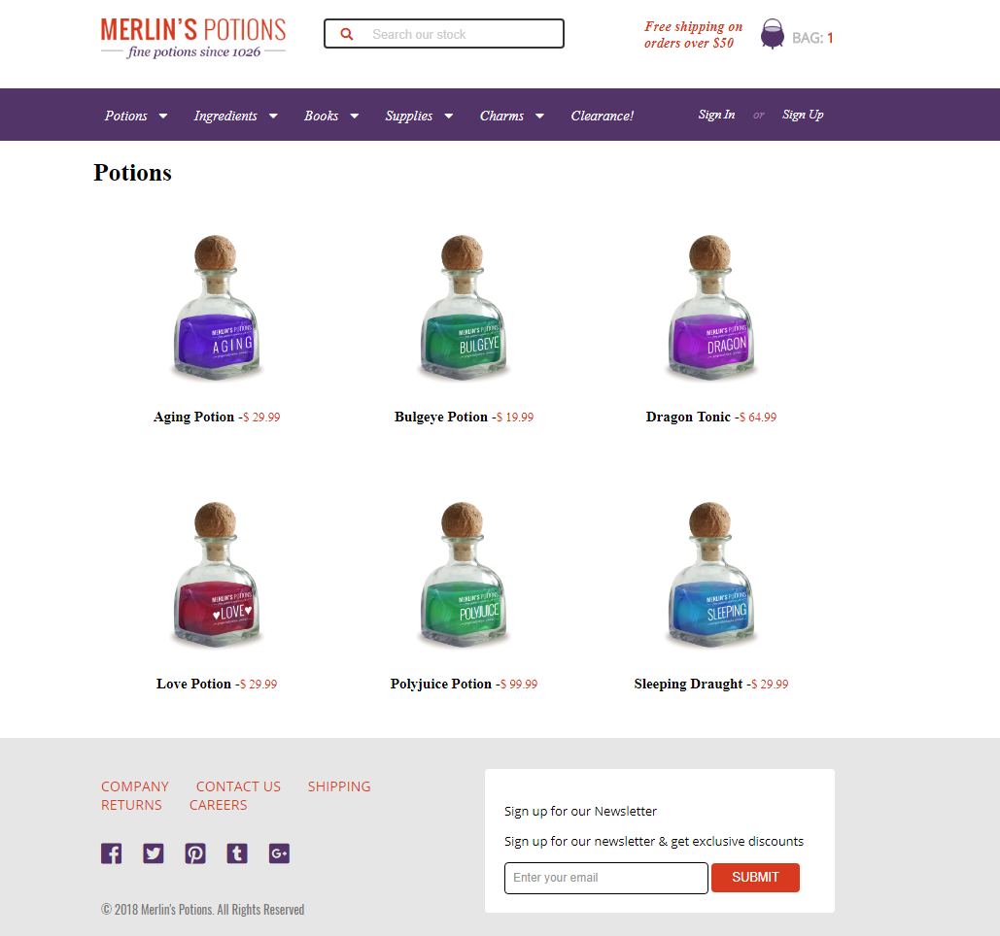

Merilin Potions Layout
Programação
- JavaScript
- JSON (API)
- CSS
- HTML
Soluções:
- PSD em HTML
- LightBox
- Mobile Screen
- Drop Down Menu
- Responsividade
Site construído devido a um desafio de entrevista, que acabou se tornando um treinamento de habilidades. Os desafios envolveram a implementação de API em JSON, PSD para HTML, responsividade e tela mobile.